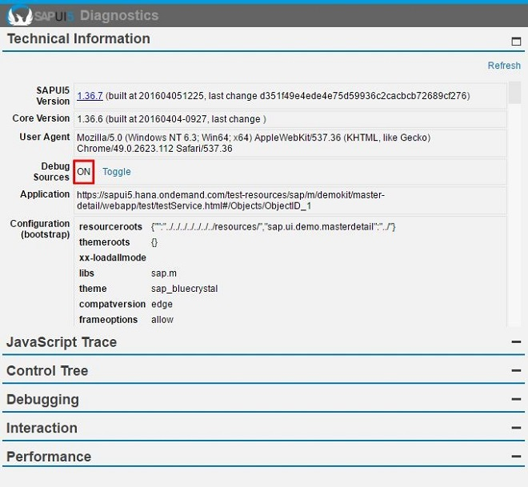
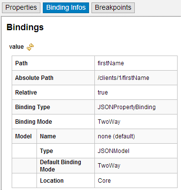
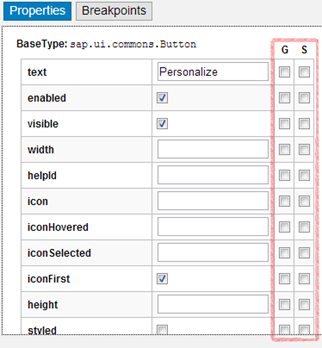
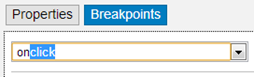
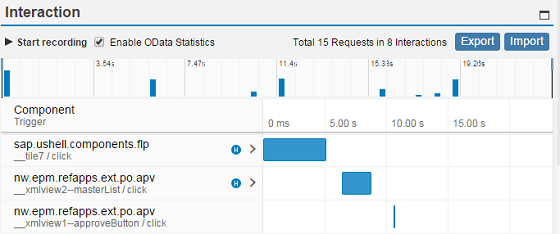
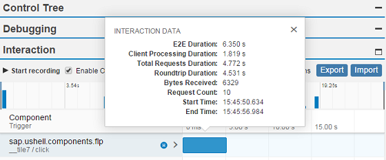
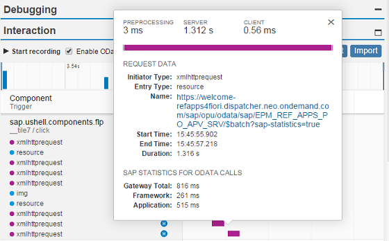

Diagnostics Window
The diagnostics window available in SAPUI5 is a support tool that runs within an existing SAPUI5 application.
To call the diagnostics window, use the following shortcut: CTRL + SHIFT + ALT + S . The individual features of this support tool are described in following sections.
To use the debugging function, it is important to use the debug sources. To enable these, set the Debug Sources function to ON using the toggle switch provided.
The control tree shows all controls that are contained in the application in a tree view. You can select controls either directly in the application by choosing CRTL+SHIFT+ALT and clicking on the control, or by selecting the control in the control tree.
The following functions are available in the dialog:
On the Properties tab you can change the defined properties of the selected control. In the example below, you can change the value, the text direction, and enable or disenable the control.

-
The Binding Infos tab shows all existing bindings for the selected control together with additional information. To update the binding, choose Refresh.

You can also see the binding context for the selected control. To navigate to the respective controls, use the hyperlinks.
-
On the Properties tab, you can add or remove breakpoints. Use the respective checkbox to add or remove a breakpoint for the get/set method of a control property.

On the Breakpoints tab, you can add or remove breakpoints for methods. You can either select the method from the dropdown box, or use auto-completion. To set the breakpoint, select the method and choose Add breakpoint. To remove a breakpoint, select the red x.

To debug a method, open and activate your browser's debugging tool. If you execute a method with an active breakpoint, the script stops at the debugger statement. To open the method, use the step-over/into function of your debugger.


The Debugging view allows you to set breakpoints for methods on class level. Select the class from the dropdown box or enter the name of the class. Choose Add to set the breakpoint. For each class, the system shows the number of active breakpoints and all methods.

At the top of the Debugging view panel, you can also configure a custom URL from which the application should load SAPUI5 during the next startup, as shown in the figure below:
Either select a known SAPUI5 installation from the dropdown box, or enter a different URL that points to the sap-ui-core.js file within a complete SAPUI5 runtime.
Once you have entered the URL, press Activate Reboot URL. When you then reload the application page, the application will load SAPUI5 from the alternative URL you selected or entered. This will only happen for the next single reboot; after that, SAPUI5 will be loaded again from the standard URL referenced within the application.
This feature can be used to test an application against a newer or older version of SAPUI5 as part of compatibility testing, or for verifying a bug fix or regression date.
Many code samples are written in JavaScript. To facilitate the conversion of these code samples into XML, SAPUI5 provides a generic conversion tool. To run the tool, proceed as follows:
- Run the SAPUI5 app in your browser, for example, open a page in the test suite.
- Open the support tool by choosing CTRL+ALT+SHIFT+S.
- Open the Control Tree panel.
- Select the root UI area in the tree on the left hand side.
- Open the Export tab and choose Export XML.
- Open the ZIP archive and extract the files to your file system.
If your app does not contain views, the content is put in one view in the output. If your app contains views and all views are loaded, the content is output as separate files.
The conversion captures the runtime status of the app. This can differ from the build declaration.
With this feature, you can collect and visualize the performance data collected for the interaction steps in an easy and intuitive way. In addition, you can enable statistics for OData calls that give you information about the app processing time taken by the OData back end.

Activation
You can start the interaction data collection in the following ways:
-
Enable interaction steps recording:
-
To measure the initial loading of the app, add the query string parameter sap-ui-xx-fesr=true at the end of the application URL and reload.
- To measure the interaction performance, choose Start recording from the Interaction panel and then switch back to the app to do the steps that you want to record. Each user activity, such as clicking buttons or list items or scrolling a list, triggers an interaction. The end of an interaction is when the UI is fully updated by the app. The collected data is displayed once you choose Stop Recording.
-
-
You can enable the OData statistics by using query string URL parameter sap-statistics=true, or from the UI by selecting Enable OData Statistics.
Output
-
Interaction details - Selecting an interaction step bar, opens a dialog with details about the selected interaction: end-to-end duration, total number of requests, the size of the transferred data and so on.

-
Interaction requests - All interactions contain 0 to N requests, which can be displayed in a list by selecting the expand icon.
-
Request details - Selecting a request opens a dialog with details, such as request type, URI, overall duration and how it is spread across client, server, and connection establishing processing. When OData statistics are enabled and the request is processed by the SAP NetWeaver OData gateway, in the details dialog there is a section with OData times – Gateway Total, Framework, and Application processing times.
NoteThe OData time (Gateway Total) is included in the total server time processing. Such requests and their interaction are identified with a blue icon .

Additional features
-
Export - Collected data can be exported as a ZIP archive for easy distribution through e-mail.
-
Import - Already collected data stored as an archive can be visualized again, using the Import function. The input can be either an already exported archive file or directly the JSON file that contains the performance data. This enables remote analysis of app data by another team/expert.